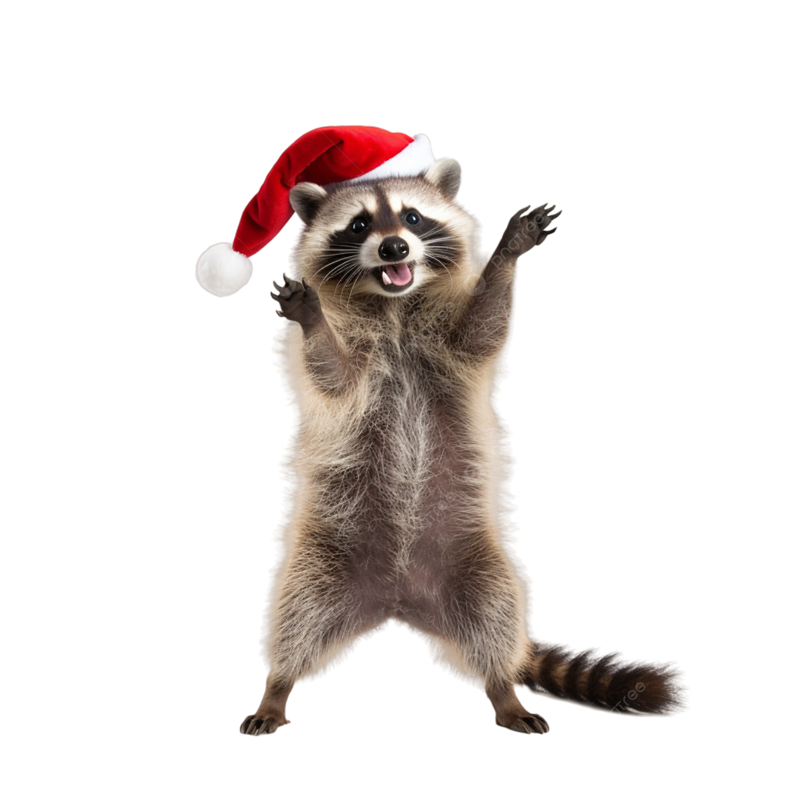

Cosas que me gustan :)
Mapaches
Tiene un tamaño mediano y puede llegar a medir entre 40 cm y 55 cm de alto. Es un poco mayor y más grueso que un
gato, de pelo medianamente largo y de color gris plateado (más oscuro en el centro del lomo), el pelo de las
extremidades casi blanco, cola larga y anillada (gris plateado con blanco o casi blanco) y una característica
mancha de pelo negro que va desde cada mejilla a cada ojo, lo que lo hace muy reconocible, pues parece que lleva
un antifaz. En ocasiones se sienta sobre sus cuartos traseros (muslos y glúteos), como hacen los osos, y, como
ellos, es de patas traseras plantígradas. En sus extremidades posee cinco dedos largos y ágiles (el tacto es su
sentido predominante). Puede pesar hasta 15 kg.
